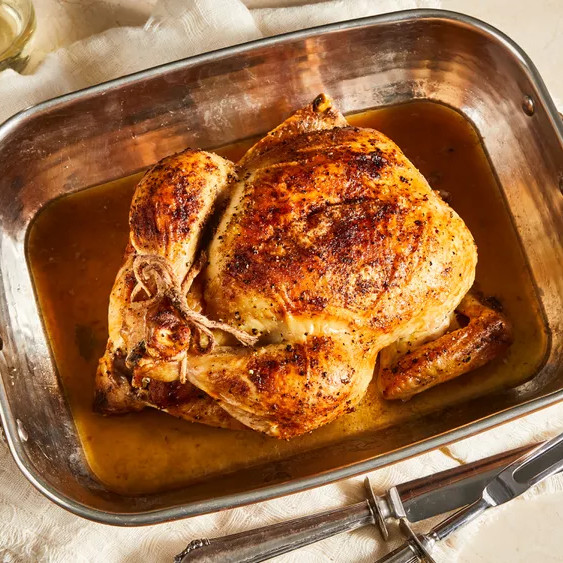

Juicy Roasted Chicken
Description
This roasted chicken recipe is the way my grandmother used to make it. This method results in the juiciest chicken! We loved to nibble on the celery after it was cooked.
Ingredients
- 1 whole chicken, giblets removed
- salt and black pepper to taste
- 1 tablespoon onion powder, or to taste
- 1/2 cup butter or margarine
- 1 stalk celery, leaves removed
Instructions
- Preheat the oven to 350 degrees F (175 degrees C).
- Place chicken in a roasting pan; season generously inside and out with onion powder, salt, and pepper. Place 3 tablespoons of butter in chicken cavity; arrange dollops of remaining butter on the outside of chicken. Cut celery into 3 or 4 pieces; place in the chicken cavity.
- Bake chicken uncovered in the preheated oven until no longer pink at the bone and the juices run clear, about 1 hour and 15 minutes. An instant-read thermometer inserted into the thickest part of the thigh, near the bone, should read 165 degrees F (74 degrees C).
- Remove from the oven and baste with drippings. Cover with aluminum foil and allow to rest for about 30 minutes before serving.